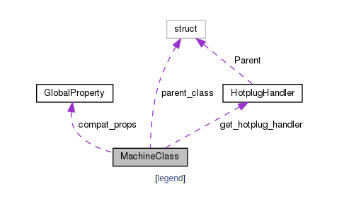

前言
看源代码是一个程序员必须经历的事情,也是可以提升能力的一个捷径.个人认为: 要完全掌握一个软件的方法只有阅读源码
在Windows下有sourceinsight这个源码阅读软件(虽然我没用过,但是网上评价还不错),由于我是个Linuxer,并不喜欢用Windows,所以自然是选择在Linux下阅读源码的工具了.
下面我将逐一介绍在Linux下阅读源码的工具.
vim+ctags+cscope
源码阅读三剑客.vim配合ctags和cscope,足以在源代码里面自由翱翔,在函数和变量间自由跳转.
安装
sudo apt-get install vim ctags cscope
使用
vim
vim的使用就略过了,网上资料很多,不是一篇文章能说完的,未来我可能会写一篇vim的使用心得
推荐一篇简明 Vim 练级攻略,看完就差不多会用了.
ctags
ctags的使用很简单,vim已经内置了对ctags的支持
首先在源代码根目录执行ctags -R,递归的为源码建立tags,在根目录会生成一个Tags的文件,存放各种函数和变量的tag,便于跳转
- 使光标在函数或变量上,
Ctrl + ]即可跳转到其定义处 Ctrl + t可以回到你跳转之前的位置
对于简单的代码,ctags就够用了,但是对于比较复杂的代码来说,ctags显得有点力不从心,于是,下一位剑客就登场了.
cscope
vim同样内置了对cscope的支持.
首先在源代码根目录执行cscope -Rbq,就会生成cscope.out文件(索引数据库)
- -R: 在生成索引文件时，搜索子目录树中的代码
- -b: 只生成索引文件，不进入cscope的界面
- -q: 生成cscope.in.out和cscope.po.out文件，加快cscope的索引速度
然后在vim中执行:cs add cscope.out,添加数据库.
接下来就可以使用:cs find x var进行查找.(x代表查询选项,var表示要查找的函数或变量名)
cscope支持8种查询方式
- s: 查找C语言符号，即查找函数名、宏、枚举值等出现的地方
- g: 查找函数、宏、枚举等定义的位置，类似ctags所提供的功能
- d: 查找本函数调用的函数
- c: 查找调用本函数的函数
- t: 查找指定的字符串
- e: 查找egrep模式，相当于egrep功能，但查找速度快多了
- f: 查找并打开文件，类似vim的find功能
- i: 查找包含本文件的文件
例如，我们想在vim 7.0的源代码中查找调用do_cscope()函数的函数，我们可以输入：”:cs find c do_cscope“，回车后发现没有找到匹配的功能，可能并没有函数调用do_cscope()。我们再输入”:cs find s do_cscope“，查找这个C符号出现的位置，现在vim列出了这个符号出现的所有位置。
每次都有输入cs find来查找数据是不是有点麻烦,有没有更方便的方法呢.当然有,vim的神奇之处在其可定制性.提供一份cscope的配置,将其放在.vimrc中即可.
"""""""""""""""""""""""""""""""""""""""""""""""""""""""""""""""
" cscope setting
"""""""""""""""""""""""""""""""""""""""""""""""""""""""""""""""
if has("cscope")
set csprg=/usr/bin/cscope
set csto=1
set cst
set nocsverb
" add any database in current directory
if filereadable("cscope.out")
cs add cscope.out
endif
set csverb
endif
nmap <C-@>s :cs find s <C-R>=expand("<cword>")<CR><CR>
nmap <C-@>g :cs find g <C-R>=expand("<cword>")<CR><CR>
nmap <C-@>c :cs find c <C-R>=expand("<cword>")<CR><CR>
nmap <C-@>t :cs find t <C-R>=expand("<cword>")<CR><CR>
nmap <C-@>e :cs find e <C-R>=expand("<cword>")<CR><CR>
nmap <C-@>f :cs find f <C-R>=expand("<cfile>")<CR><CR>
nmap <C-@>i :cs find i ^<C-R>=expand("<cfile>")<CR>$<CR>
nmap <C-@>d :cs find d <C-R>=expand("<cword>")<CR><CR>
上面的配置即把Ctrl + @作为:cs find的快捷键,也就是说要查找某个函数名,只需要把光标放在函数名上,按下Ctrl + @ + s即可,简直不能更方便.而且你可以自己修改配置,映射到自己觉得舒服的快捷键上.
本着不重复造轮子的原则,我就简单的写了cscope的基本用法,其实基本上就够用了,进阶的用法参考这篇文章vi/vim使用进阶: 程序员的利器 – cscope
doxygen
上面我们讲的是用vim来查看源代码,但是面对几十万代码的时候,想要看清楚各个结构体之间的关系就不是vim能够做到的了.这时候我们就需要doxygen来帮手了.
Doxygen is the de facto standard tool for generating documentation from annotated C++ sources, but it also supports other popular programming languages such as C, Objective-C, C#, PHP, Java, Python, IDL (Corba, Microsoft, and UNO/OpenOffice flavors), Fortran, VHDL, Tcl, and to some extent D.
doxygen是一个根据源代码生成文档的工具,这货虽然主要是给C++用的,但是它也对其他语言有支持.
安装直接去官网,按照其指导安装即可
下面介绍一下doxygen的使用方法.
首先,在源代码根目录执行doxygen -g,然后在根目录就会突然冒出一个名为Doxyfile的文件,这个文件就是doxygen生成文档的配置文件了.
那么,重点来了,怎么配置这个文件,默认的配置是根据代码生成各个结构体的成员数据,然后生成html和latex两个文件夹,分别是网页和latex文档.
说实话,默认生成的文档并没有什么卵用,除了让你更方便的看到各个结构体的组成成员.我们关心的是各个结构体之间的关系,这是针对C而言的.对与C++和java而言,关心的是类之间的关系.所以,默认的配置肯定是要修改的.至于怎么改,看官方文档.
当然了,如果这篇文章唯一给出的建议就是看文档,那这篇文章有什么意义呢.大家都知道看文档可以解决问题,但是时间成本太高,而且是英文的.写这篇文章的目的是分享自己学习得到的经验,让大家少走弯路,如果不能解决你的问题,只能去看文档了
接下来我根据我自己看文档用到的配置跟大家解释一下.
首先,Doxygen里面的配置可谓又臭又长,你绝对不会有读完它的欲望.所以我给出几个关键的配置项,到时候搜索它修改即可
- 这是针对各种语言优化输出的选项,默认都是NO,因为它不清楚你用的是什么语言(话说看一下后缀不就知道了吗...)
OPTIMIZE_OUTPUT_FOR_C
OPTIMIZE_OUTPUT_JAVA
OPTIMIZE_FOR_FORTRAN
OPTIMIZE_OUTPUT_VHDL - 这个是生成文档的类型的选项,默认生成html和latex,共支持六种类型的文档,每种类型的生成配置也是很多,具体根据需要配置
GENERATE_HTML
GENERATE_LATEX
GENERATE_RTF
GENERATE_XML
GENERATE_DOCBOOK
GENERATE_MAN 关于生成图像的选项.doxygen使用dot这个工具来绘图,所以要先执行
sudo apt-get install graphviz安装dot.在设置好这个绘图选项之后,doxygen就会生成各个结构体的关系,对于类会生成函数调用关系(我没试过,因为只试过C的).HAVE_DOT (一定要置为YES,后面的选项都依赖这个) DOT_NUM_THREADS (使用dot绘图的线程数量,越多越快,我一般是设置跟cpu的核数一样)
//以下两个选项跟生成函数调用关系图有关
CALL_GRAPH
CALLER_GRAPH
EXTRACT_ALL //把所有实体都输出到文档,不管它是否能被描述
EXTRACT_STATIC //把静态变量也输出到文档中
EXTRACT_PRIVATE //把私有变量也输出到文档中给一个结构体关系图,就是doxygen生成的.
关于源码搜索路径,默认是搜索本目录的源代码,大部分情况下源码是分布在各个子目录的.
RECURSIVE = YES默认RECURSIVE是NO,所以记得把它设置为YES,递归搜索子目录. 感谢soglad的留言提醒
最后一步,在源码根目录执行doxygen,它会自动找到Doxygen配置,根据配置生成文档.
gdb
最后一个工具,大名鼎鼎的gdb.分析源码执行流程的最好方式的是运行它,然后一步步执行.用来观察它最好的工具当然是gdb了(针对C/C++).
gdb的使用我也不打算造轮子,直接参考用GDB调试程序,这篇写的很好,通俗易懂.
后记
以上就是我在阅读源码的时候使用的Linux工具,三剑客vim+ctags+cscope,两板斧doxygen gdb,足以驰骋源代码的江湖.
以上工具,vim和gdb是最难学的,学习曲线很陡峭.但是学好之后,就能守得云开见月明.
参考文章,感谢帮助
vi/vim使用进阶: 程序员的利器 – cscope